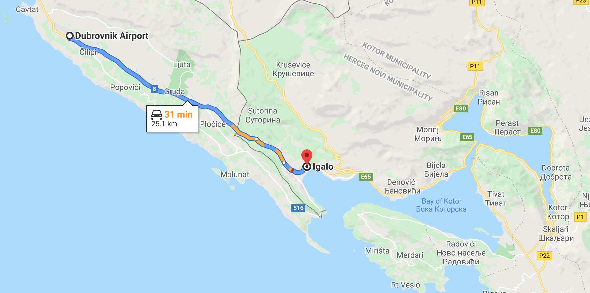
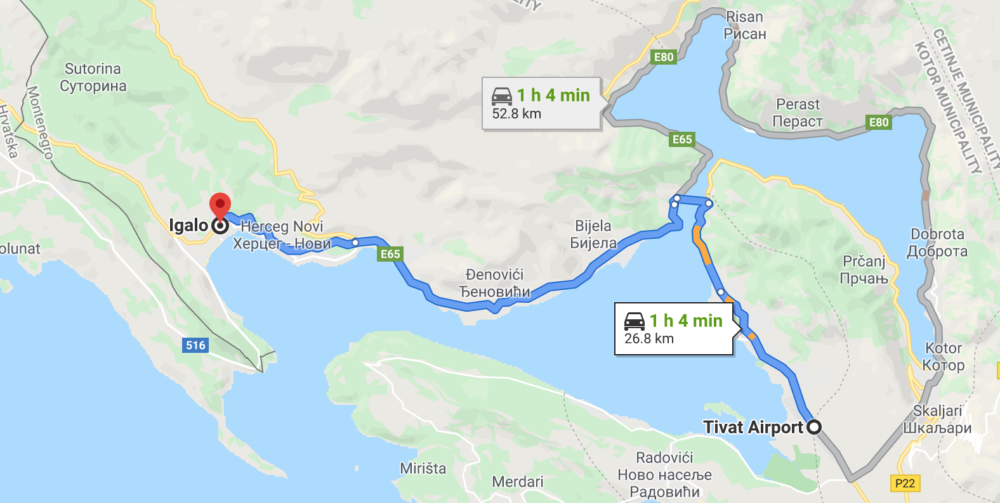

Location
The Igalo Gardens complex is located in Igalo, next to Herceg Novi. It is 6 km from the Croatian border, 26 km from Cilipi airport and 40 km from Dubrovnik. 28 km south, there is Tivat Airport. The whole complex is located on a hill called Osmanova Glavica. It is about 450 m away from the sea. The access road (street II of the Dalmatian Brigade) is separated from the highway at the gas station. The urban plan envisages another road to the complex and its construction is planned during the construction of the complex. In front of the complex, there are 3 tennis courts, 1 basketball court and a multifunctional sports hall.Public transportation is good (bus station is 300 m away from the complex).The complex is located on Qatarstar Plot 76 (from 76/1 to 76/12).
 